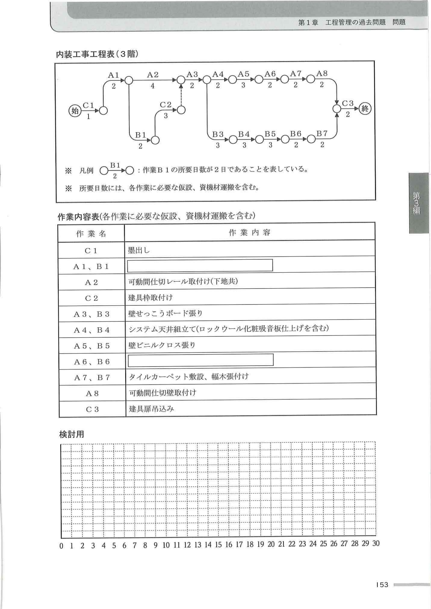

建設業を取り巻く環境の変化は著しく、労働生産性の向上や担い手の確保に対する取組は、建設現場において日々直面する課題となり、重要度が一層増している。
要求された品質を確保したうえで行った施工の合理化の中から、労働生産性の向上に繋がる現場作業の軽減を図った工事について、次の1.及び2.の問いに答えなさい。
| 工事名 | 共同住宅新築工事 |
|---|---|
| 主要用途 | 共同住宅 52戸 |
| 用途地域 | 住居地域 6m道路隣接 |
| 主要構造 | 鉄筋コンクリート構造 地上7階建て |
| 工期 | 2024年1月〜2025年6月 |
| 面積 | 敷地2,350.00㎡／建築758.85㎡／延床4,950.60㎡／最高高さ23.25m／1〜4階3.3m、5〜7階3.0m／エレベーター乗用8人乗り1台 |
| 根切深さ | 2.5m |
|---|---|
| 山留め | 親杭横矢板工法 |
| 地業 | 現場造成杭（アースドリル工法） |
| コンクリート | 普通コンクリート |
| 型枠 | コンクリート型枠用合板／支保工：パイプサポート |
| 鉄筋 | 工場加工、現場組立て／柱・梁主筋：ガス圧接継手 |
| 屋根 | 陸屋根：アスファルト露出断熱防水＋アルミ製笠木／バルコニー：モルタル下地＋ウレタン系塗膜防水／外部廊下：コンクリート直均し＋ビニル床シート／外部階段：モルタル下地＋ビニル床シート |
|---|---|
| 外壁 | コンクリート打放し＋防水形複層塗材／内断熱工法（現場発泡断熱材吹付け） |
| 手すり壁 | バルコニー：アルミ製既製品 H=1.2m／外部廊下・階段：コンクリート打放し＋防水形複層塗材＋ステンレス製壁付手すり |
| 建具 | 風除室：ステンレス製オートロック式自動扉＋強化ガラス／玄関：化粧シート張り鋼製扉／窓：アルミ製サッシ（1〜2階網入りガラス／3〜7階フロートガラス） |
| 床 | 居室：コンクリート直均し＋乾式二重床＋フローリングボード／水廻り：コンクリート直均し＋乾式二重床＋耐水合板＋ビニル床シート／風除室：モルタル下地＋ノンスリップタイル |
|---|---|
| 壁 | 居室：軽量鉄骨下地＋せっこうボード＋ビニルクロス／水廻り：軽量鉄骨下地＋シージングせっこうボード＋ビニルクロス／風除室：モルタル下地＋有機系接着剤による小口タイル |
| 天井 | 居室・水廻り：軽量鉄骨下地＋せっこうボード＋ビニルクロス／風除室：軽量鉄骨下地＋アルミスパンドレル |
| 建具他 | 居室：化粧シート張り木製扉（枠共）／水廻り：ユニットバス、洗面化粧台、システムキッチン／風除室：集合郵便受け、インターホンパネル |
| 構内舗装 | 駐車場：アスファルト舗装／駐輪場：コンクリート舗装／アプローチ：インターロッキング舗装 |
|---|---|
| 囲障・植栽 | 化粧フェンス／駐車場入口：レール式門扉／敷地境界：中木、低木混栽 |
① 工種名等／② 現場作業の軽減のために実施した内容と軽減が必要となった具体的な理由／③ ②を実施した際に低下が懸念された品質と品質を確保するための施工上の留意事項
① 労働者の確保を困難にしている建設現場が直面している課題や問題点／② ①に効果があると考える建設現場での取組や工夫
次の1.〜3.の災害について、施工計画に当たり事前に検討した事項として、災害の発生するおそれのある状況又は作業内容と災害を防止するための対策を、それぞれ2つ具体的に記述しなさい。
ただし、解答はそれぞれ異なる内容の記述とし、保護帽や要求性能墜落制止用器具の使用、朝礼時の注意喚起、点検や整備などの日常管理、安全衛生管理組織、新規入場者教育、資格や免許に関する記述は除く。
1. 墜落、転落による災害
2. 崩壊、倒壊による災害
3. 移動式クレーンによる災害
市街地での事務所ビル新築工事において、同一フロアをA、Bの2工区に分けて施工を行うとき、右の内装工事工程表（3階）に関し、次の1.から4.の問いに答えなさい。

変更後のB工区の建具枠取付けの所要日数は2日で、納入の遅れたA工区の建具枠は、B工区の壁せっこうボード張り完了までに取り付けられることが判った。
このとき、当初クリティカルパスではなかった作業「あ」から作業A8までがクリティカルパスとなり、始から終までの総所要日数は「い」日となる。「あ」と「い」を答えなさい。
次の1.〜4.の問いに答えなさい。
ただし、解答はそれぞれ異なる内容の記述とし、材料（仕様、品質、運搬、保管等）、作業環境（騒音、振動、気象条件等）、下地、養生及び作業員の安全に関する記述は除く。
1. 屋根保護防水断熱工法における保護層の平場部の施工上の留意事項を2つ、具体的に記述しなさい。
なお、防水層はアスファルト密着工法とし、保護層の仕上げはコンクリート直均し仕上げとする。
2. 木製床下地にフローリングボード又は複合フローリングを釘留め工法で張るときの施工上の留意事項を2つ、具体的に記述しなさい。
3. 外壁コンクリート面を外装合成樹脂エマルション系薄付け仕上塗材（外装薄塗材E）仕上げとするときの施工上の留意事項を2つ、具体的に記述しなさい。
4. 鉄筋コンクリート造の外壁に鋼製建具を取り付けるときの施工上の留意事項を2つ、具体的に記述しなさい。
次の1.〜8.の各記述において、（ ）に当てはまる最も適当な語句又は数値の組合せを、下の枠内から1つ選びなさい。
1. 地盤の平板載荷試験
地盤の平板載荷試験は、地盤の変形及び支持力特性を調べるための試験である。
試験は、直径（ a ）cm以上の円形の鋼板にジャッキにより垂直荷重を与え、載荷圧力、載荷時間、（ b ）を測定する。
また、試験結果により求められる支持力特性は、載荷板直径の1.5〜（ c ）倍程度の深さの地盤が対象となる。
2. 根切り・床付け面
根切りにおいて、床付け面を乱さないため、機械式掘削では、通常床付け面上30〜50cmの土を残して、残りを手掘りとするか、ショベルの刃を（ a ）のものに替えて掘削する。
床付け面を乱してしまった場合は、礫や砂質土であれば（ b ）で締め固め、粘性土の場合は、良質土に置換するか、セメントや石灰等による地盤改良を行う。
また、杭間地盤の掘り過ぎや掻き乱しは、杭の（ c ）抵抗力に悪影響を与えるので行ってはならない。
3. オールケーシング工法（場所打ちコンクリート杭地業）
場所打ちコンクリート杭地業のオールケーシング工法において、地表面下（ a ）m程度までのケーシングチューブの初期の圧入精度によって以後の掘削の鉛直精度が決定される。
掘削は（ b ）を用いて行い、一次スライム処理は、孔内水が多い場合には、（ c ）を用いて処理し、コンクリート打込み直前までに沈殿物が多い場合には、二次スライム処理を行う。
4. 鉄筋のガス圧接（手動）
鉄筋のガス圧接を手動で行う場合、突き合わせた鉄筋の圧接端面間の隙間は（ a ）mm以下で、偏心、曲がりのないことを確認し、還元炎で圧接端面間の隙間が完全に閉じるまで加圧しながら加熱する。
圧接端面間の隙間が完全に閉じた後、鉄筋の軸方向に適切な圧力を加えながら、（ b ）により鉄筋の表面と中心部の温度差がなくなるように十分加熱する。
このときの加熱範囲は、圧接面を中心に鉄筋径の（ c ）倍程度とする。
5. 型枠に作用するコンクリートの側圧
型枠に作用するコンクリートの側圧に影響する要因として、コンクリートの打込み速さ、比重、打込み高さ及び柱、壁などの部位の影響等があり、打込み速さが速ければコンクリートヘッドが（ a ）なって、最大側圧が大となる。
また、せき板材質の透水性又は漏水性が（ b ）と最大側圧は小となり、打ち込んだコンクリートと型枠表面との摩擦係数が（ c ）ほど、液体圧に近くなり最大側圧は大となる。
6. 型枠組立て（丸セパレーター）
型枠組立てに当たって、締付け時に丸セパレーターのせき板に対する傾きが大きくなると丸セパレーターの（ a ）強度が大幅に低下するので、できるだけ垂直に近くなるように取り付ける。
締付け金物は、締付け不足でも締付け過ぎでも不具合が生じるので、適正に使用することが重要である。締付け金物を締め過ぎると、せき板が（ b ）に変形する。
締付け金物の締付け過ぎへの対策として、内端太（縦端太）を締付けボルトとできるだけ（ c ）等の方法がある。
7. 暑中コンクリート
コンクリート工事において、暑中コンクリートでは、レディーミクストコンクリートの荷卸し時のコンクリート温度は、原則として（ a ）℃以下とし、コンクリートの練混ぜから打込み終了までの時間は、（ b ）分以内とする。
打込み後の養生は、特に水分の急激な発散及び日射による温度上昇を防ぐよう、コンクリート表面への散水により常に湿潤に保つ。
湿潤養生の開始時期は、コンクリート上面ではブリーディング水が消失した時点、せき板に接する面では脱型（ c ）とする。
8. 鉄骨工事 スタッド溶接検査
鉄骨工事におけるスタッド溶接後の仕上がり高さ及び傾きの検査は、（ a ）本又は主要部材1本若しくは1台に溶接した本数のいずれか少ないほうを1ロットとし、1ロットにつき1本行う。
検査する1本をサンプリングする場合、1ロットの中から全体より長いかあるいは短そうなもの、又は傾きの大きそうなものを選択する。なお、スタッドが傾いている場合の仕上がり高さは、軸の中心でその軸長を測定する。
検査の合否の判定は限界許容差により、スタッド溶接後の仕上がり高さは指定された寸法の±（ b ）mm以内、かつ、スタッド溶接後の傾きは（ c ）度以内を適合とし、検査したスタッドが適合の場合は、そのロットを合格とする。
次の1.〜3.の各法文において、（ ）に当てはまる正しい語句又は数値を、下の該当する枠内から1つ選びなさい。
1. 建設業法（第24条の6：特定建設業者の下請代金の支払期日等）
第24条の6 特定建設業者が（ ① ）となつた下請契約（下請契約における請負人が特定建設業者又は資本金額が政令で定める金額以上の法人であるものを除く。）における下請代金の支払期日は、第24条の4第2項の申出の日から起算して（ ② ）日を経過する日以前において、かつ、できる限り短い期間内において定められなければならない。
2. 建築基準法施行令（第136条の5：落下物に対する防護）
第136条の5 （略）
2 建築工事等を行なう場合において、建築のための工事をする部分が工事現場の境界線から水平距離が（ ③ ）m以内で、かつ、地盤面から高さが（ ④ ）m以上にあるとき、その他はつり、除却、外壁の修繕等に伴う落下物によって工事現場の周辺に危害を生ずるおそれがあるときは、国土交通大臣の定める基準に従って、工事現場の周囲その他危害防止上必要な部分を鉄網又は帆布でおおう等落下物による危害を防止するための措置を講じなければならない。
3. 労働安全衛生法（第29条の2：元方事業者の講ずべき措置等）
第29条の2 建設業に属する事業の元方事業者は、土砂等が崩壊するおそれのある場所、機械等が転倒するおそれのある場所その他の厚生労働省令で定める場所において関係請負人の労働者が当該事業の仕事の作業を行うときは、当該関係請負人が講ずべき当該場所に係る（ ⑤ ）を防止するための措置が適正に講ぜられるように、（ ⑥ ）上の指導その他の必要な措置を講じなければならない。
1. 建設業法 第24条の6（特定建設業者の下請代金の支払期日等）
① 正解：注文者 ／ 特定建設業者が注文者となる下請契約（請負人が特定建設業者・大手法人を除く）に適用。
② 正解：50 ／ 支払期日は申出日から起算して50日を経過する日以前で、できる限り短い期間内。元請けによる下請けへの支払い遅延を防止する趣旨。
2. 建築基準法施行令 第136条の5（落下物に対する防護）
③ 正解：5 ／ 工事現場の境界線から水平距離5m以内。
④ 正解：7 ／ 地盤面から高さ7m以上にある場合、鉄網又は帆布でおおう等の落下物防止措置が必要。
3. 労働安全衛生法 第29条の2（元方事業者の講ずべき措置等）
⑤ 正解：危険 ／ 元方事業者は、関係請負人が講ずべき危険を防止するための措置が適正に講ぜられるように指導しなければならない。
⑥ 正解：技術 ／ 技術上の指導その他の必要な措置を講じなければならない。土砂崩壊・機械転倒のおそれがある場所での作業に適用。